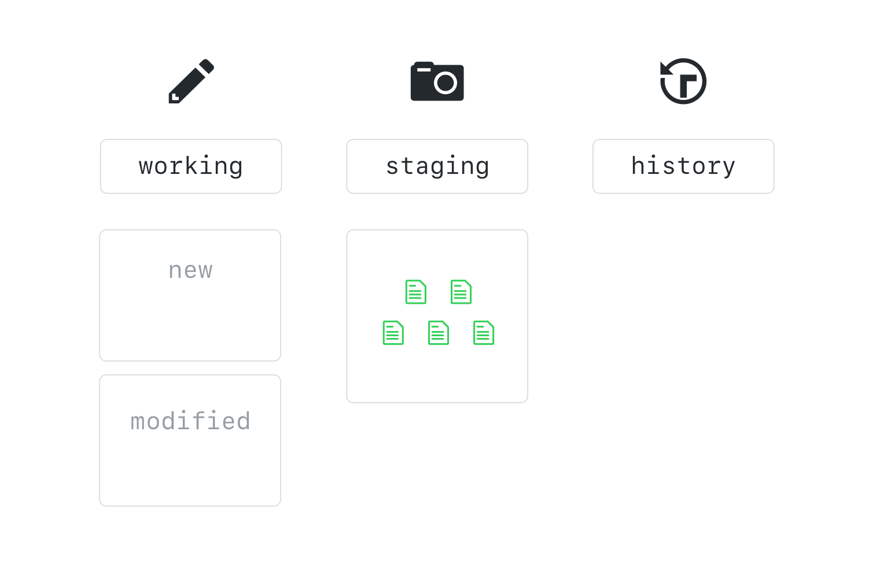

ローカルでのGitの作業
コマンドラインを使用して、Gitを現在のワークフローに簡単に統合できます。
リポジトリのローカルコピーの作成

ローカルで作業する前に、リポジトリのクローンを作成する必要があります。
リポジトリをクローンするとき、そのリポジトリ内の履歴を含むすべてのコピーが作成されます。 これは、gitのような分散型バージョン管理システムのメリットの１つです。コミット履歴をレビューするために低速の集中型サーバにクエリする必要はなく、ローカルでクエリは高速に実行されます。
クラスのリポジトリを、あなたのローカルのパソコンにクローンしましょう。
- GitHubのクラスのリポジトリの Code タブに移動します。
- Clone or downloadをクリックします。
- あなたのクリップボードに、clone URLをコピーします。
- コマンドラインのアプリケーションを開きます。
- GitHubからリポジトリの完全なコピーを取得します。
git clone <CLONE-URL> - クローンが完了したら、クローンにより作成された新しいディレクトリに移動します。
cd <REPOSITORY-NAME>
私たちのお気に入りの Gitコマンド git status
$ git status
On branch master
Your branch is up-to-date with 'origin/master'.
nothing to commit, working tree clean
git statusは、リポジトリの現在の状態とそれに含まれるファイルを確認するために、頻繁に使用するコマンドです。 現在のところ、gh-pagesブランチにいることが表示されています。すべてがorigin/gh-pagesに合わせて最新版になり、ワーキングツリーはクリーンです。
ローカルでのブランチの使用
$ git branch
git branchと入力すると、ローカルのブランチの一覧が表示されます。
$ git branch --all
$ git branch -a
リモートブランチの読み取り専用のコピーを含むすべてのブランチを表示したい場合、--all のオプション、または、単に -a と追記します。
--allおよび-aは、ブランチコマンドの実質的な同義語です。 Gitは、しばしば、文字数の多いオプションと文字数の少ないオプションを提供します。
ブランチの切り替え
$ git checkout <BRANCH-NAME>
オンラインで作成したブランチをチェックアウトするには、git checkoutとブランチの名前を入力します。 Gitは、そのブランチが切り替わったことを伝えるメッセージを表示し、かつ、同じoriginからのリモートブランチを追跡するように設定されます。
ブランチ名の前に、
remotes/originを入力する必要はありません。ブランチ名のみで大丈夫です。 ブランチ名の前にremotes/originを入力すると、分離されたHEAD状態になります。 後ほど詳しく学習しますが、今は、この状態が、あるべき状態ではないことを覚えておいてください。
実習：ファイルの編集
今度は、画像とキャプションをファイルに入れてみましょう。
- あなたのファイル、
named 2010-02-##-USERNAME.mdを見つけます。 - お好みのテキストエディタで、ファイルを開きます。
- 画像テキストをコピーして、ファイルの６行目に貼り付けます。
９行目と１０行目に、キャプションのコードを追加します。
``` CAPTION-HERE {: .fragment} ```
- ファイルを Save（保存）します。
ローカルでのファイルの取り扱い方法について、Gitは制限をしません。 お好みのIDEならびにテキストエディタで作業でき、または、コマンドラインでVIMを使用することができます。
コマンドラインからファイルを開くために、多くのIDEやテキストエディタにショートカット機能があります。 例えば、
atom .を使うとAtomでプロジェクトを開くことができ、code .を使うと Visual Studio Codeでプロジェクトを開くことができます。
2 段階コミット
ファイルを作成した後、リポジトリの最初のスナップショットを作成します。 コマンドラインから作業する場合は、２段階コミットという概念に慣れておく必要があります。

ローカルで作業する場合、ファイルは、４つの状態のいずれかになります。 その状態は、untracked（未追跡）、modified（変更された）、staged（ステージされた）またはcommitted（コミットされた）です。
Untrackedファイルは、一度もコミットされていない新しいファイルです。
Gitはこれらのファイルを追跡し、3つの作業ツリーで、そのファイルと変更を整理して履歴を追跡します。 その３つの作業ツリーは、Working、Staging （インデックスとも言う）、およびHistoryです。 ファイルに変更を加えている時、その変更は作業ツリーで発生しているのです。

ファイルをバージョン管理に追加するには、個別の作業単位を表す一連のファイルを作成します。 この作業単位をステージングエリアに作成します。

組み立てた作業単位についてよければ、ステージングエリアのすべてのもののスナップショットを取得します。 このスナップショットを、コミットと呼びます。

ファイルをバージョン管理されたディレクトリの一部にするためには、最初にgit addを行い、次にgit commitを行います。 今すぐ、やってみましょう。
- まず、作業ツリーの状態を確認しましょう。
git status - ファイルを作業ツリーからステージングエリアに移動します。
git add my-file.md - 移動したかどうかステータスを確認します。
git status - それでは、最初のスナップショットを取得します。
git commit - Gitがデフォルトのテキストエディタを開き、コミットメッセージを要求します ファイルの先頭行にメッセージを入力してください。 ＃が付いていない行のすべてが、コミットメッセージに含まれます。
- コミットメッセージを保存して閉じます。
- リポジトリのステータスをもう一度確認します。
git status
優れたコミットメッセージは、
- 短いこと。 50文字以下が理想的です。
- コミットによって行われる変更を記述すること。
- プロジェクトの進捗状況について記載すること。